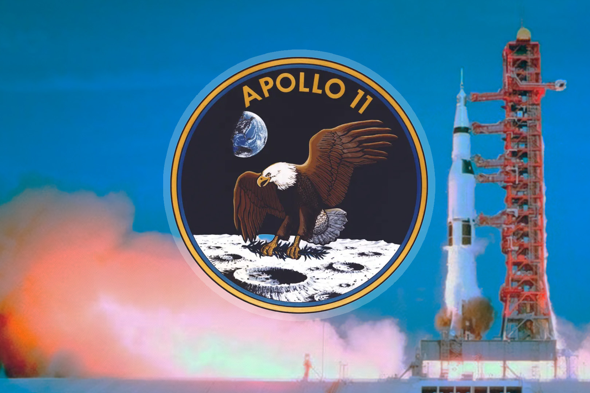
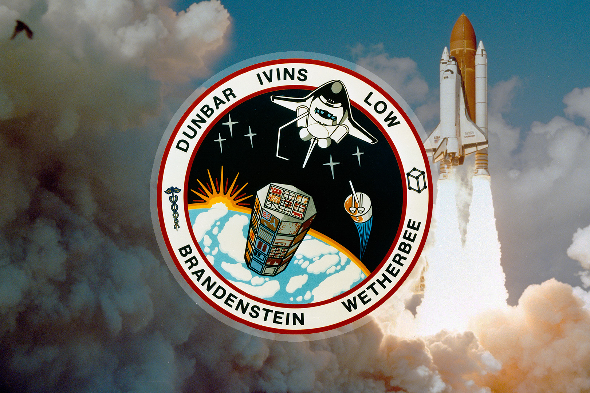
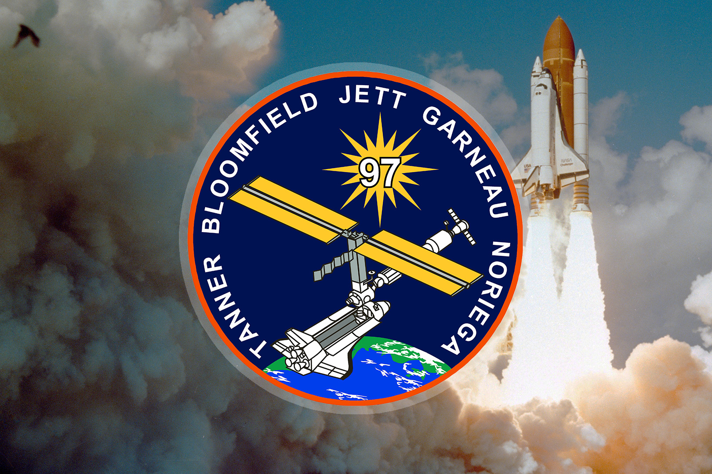
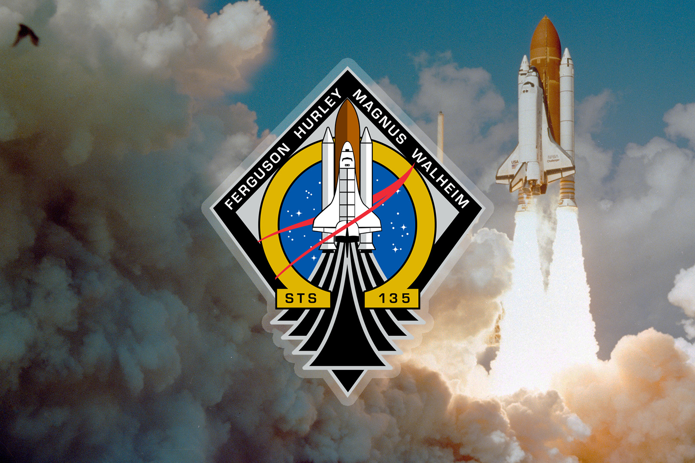
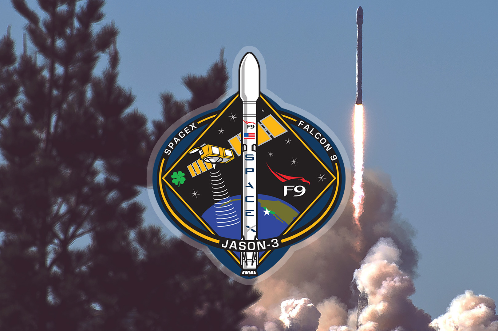
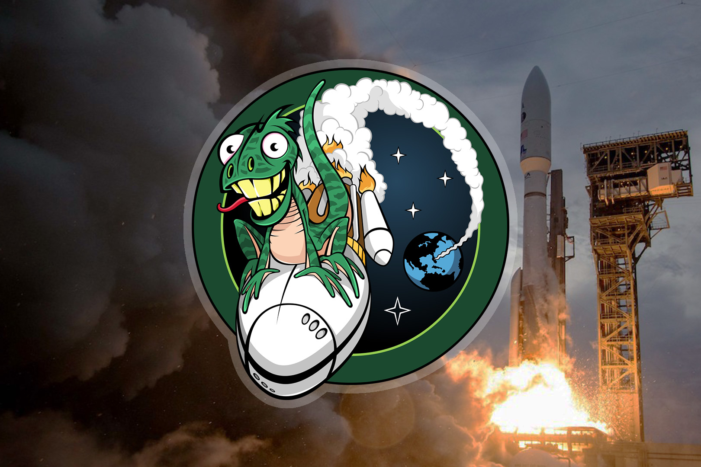
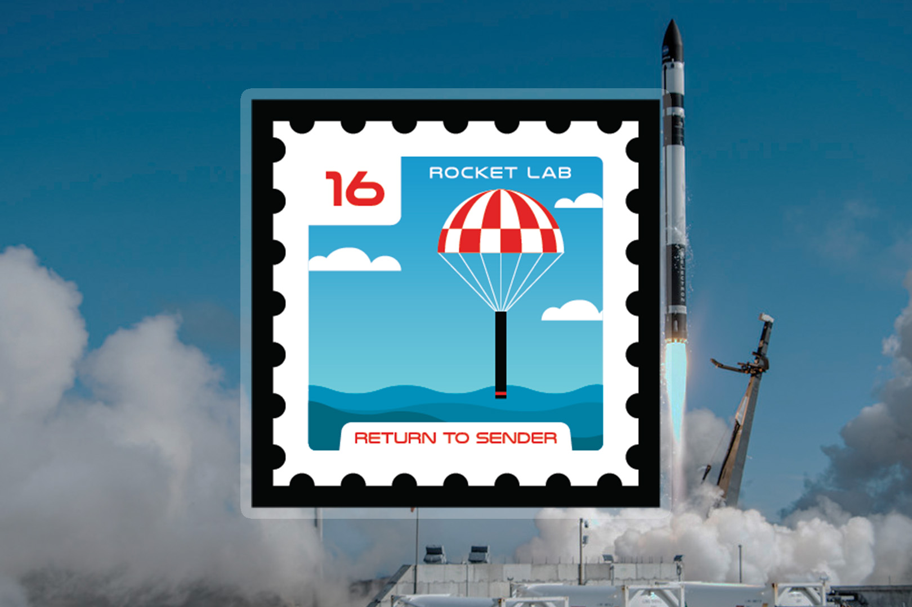
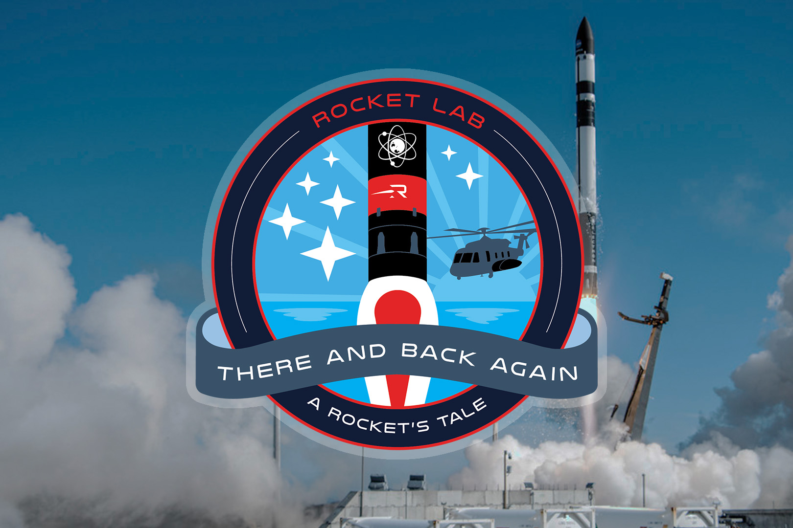
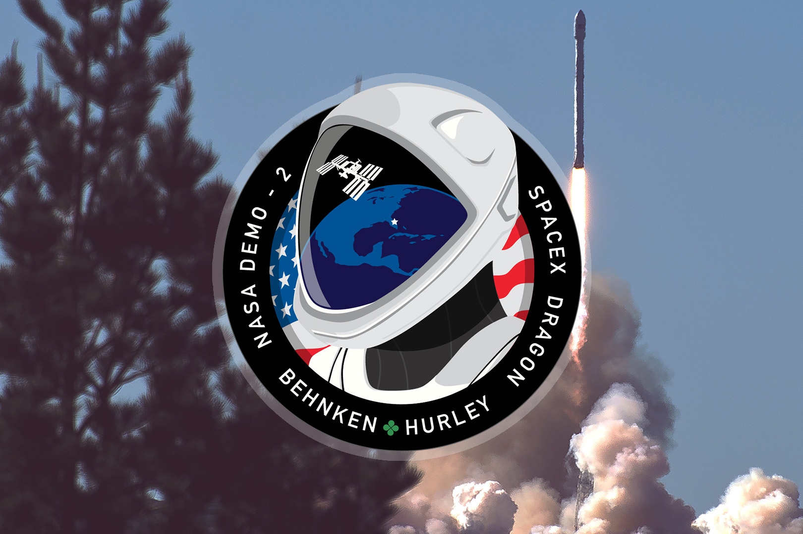
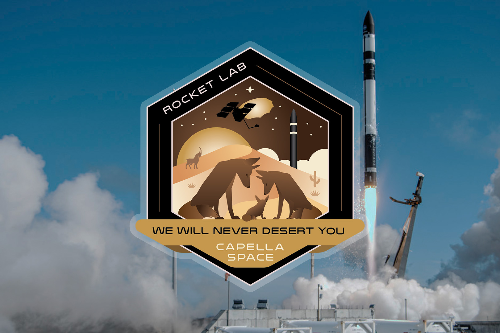

August 21, 1965 - NASA's Gemini 5

July 16, 1969. - NASA's Apollo 11

January 9, 1990 - Space Shuttle STS-32

November 30, 2000 - Space Shuttle STS-97

July 8, 2011 - Space Shuttle STS-135

January 17, 2016 - SpaceX's Jason-3

July 28, 2016 - United Launch Alliance NROL-61

November 20, 2020 - Rocket Lab's Return to Sender

May 2, 2022 - Rocket Lab's There and Back Again

May 30, 2020 - SpaceX Crew Dragon Demo-2September 14, 2023 - Firefly Aerospace's Victus Nox

September 19, 2023 - Rocket Lab's We Will Never Desert You